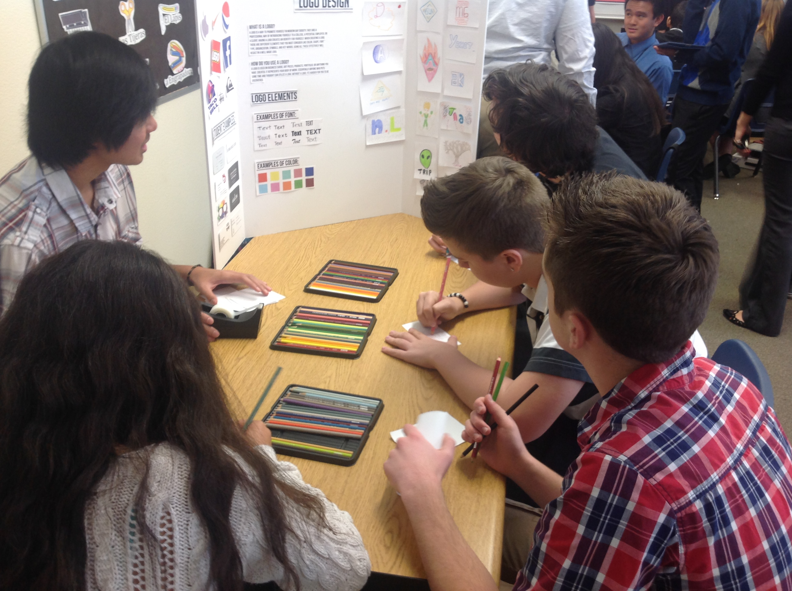
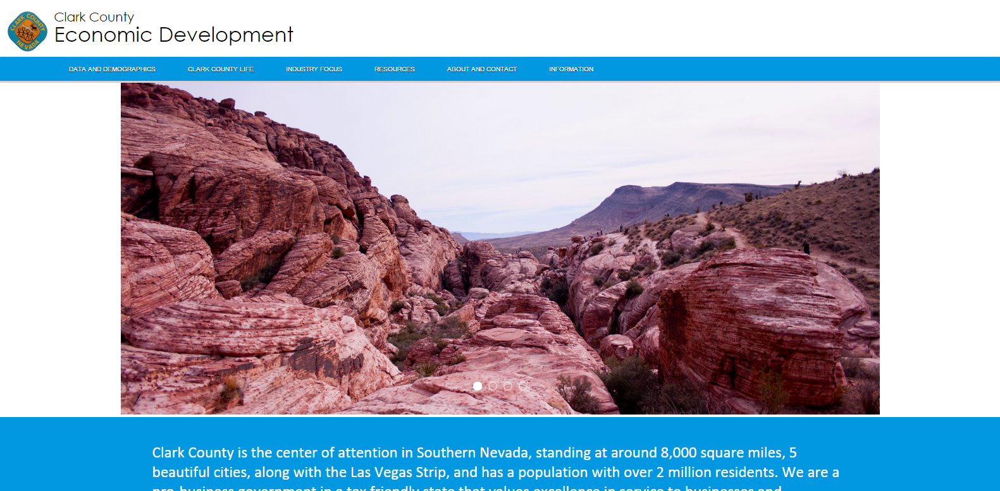
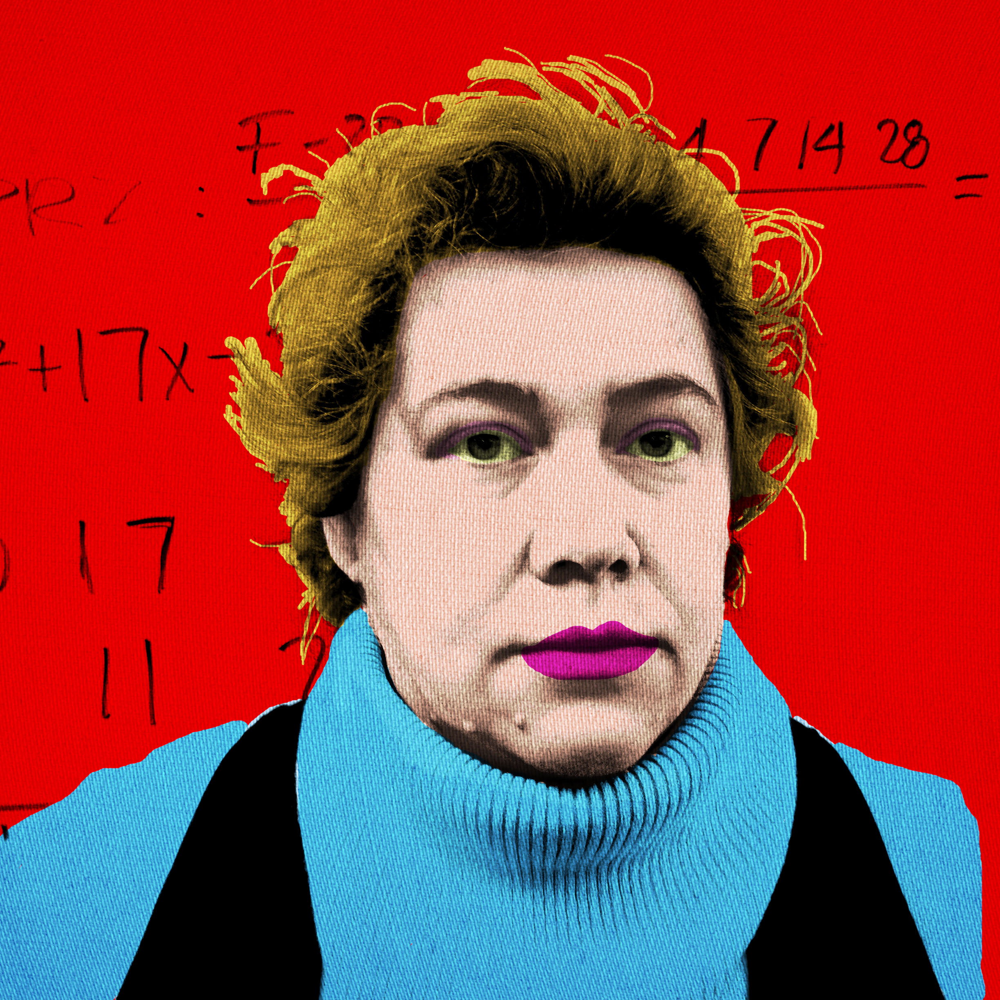

Junior Year
Content Knowledge
Above is a pdf link to a group essay that I had completed about extremists, and influces of a community. This essay was a good experience for me because it was not only my first group essay, but it was my first full research paper. This paper had tested my content knowledge, because of all the content that we had to write about in the paper.
Presentation Skills

This was our Hip Hop Meets IT project. This was our project based learning for our web design class, and we invited hip hop dancers to teach us how to dance, and teach them how to code. I think this should be in the presentation skills tennant because we had to present our board to our audience, and help them create an effective logo, because that was our exhibit.
Teamwork and Collaboration

This project was out first client site, and I was able to be the leader of my team. Although this is yet an unfinished project, I have learned to organize the team, so that all the team members could release there best area of knowledge to create the best site possible.
Use of Resources

This is an image of our final infographics prject, that we created for graphics design. This assignment was extremely fun, working on all the sections with my friends. I think I learned how to use the pen tool for the first time correctly, because I was never in graphics one. I put this under use of resources because I used images to trace the skaters out, and learned how to use the pen tool through tutorials.
Work Ethic

This project was for graphics design, and we were assigned to Warholize a teacher. For this project I chose my Algebra teacher Ms. Thompson, for no particular reason. I think this project turned out great, and she liked it very much. I put this in the work ethic section because this project consisted of a lot of trial and error, but I didn't give up and it turned out verry well.
Writing Skills
This is a link to an writing assignment that I had collaborated with two other class mates. The project was based on McCarthy, and the red scare. This project was intesly difficult because we had to mkae sure that none of the content repeated. This is in the writing skills tennant because this was a major writing assignment.